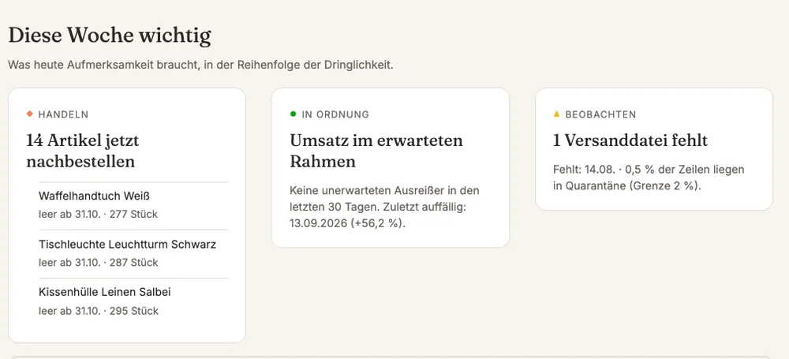
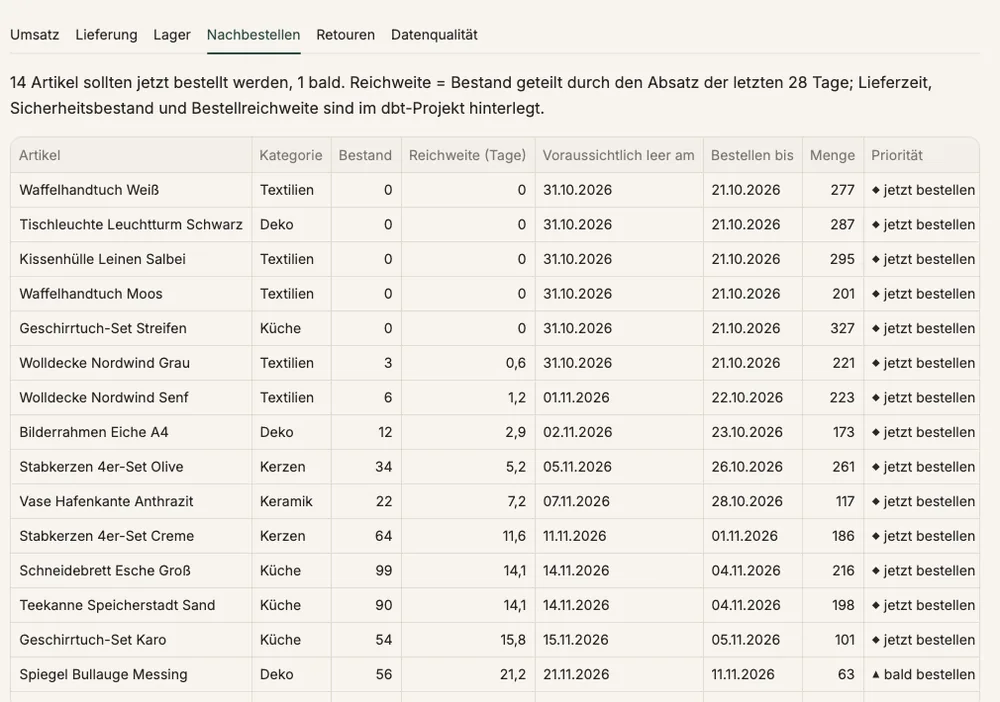
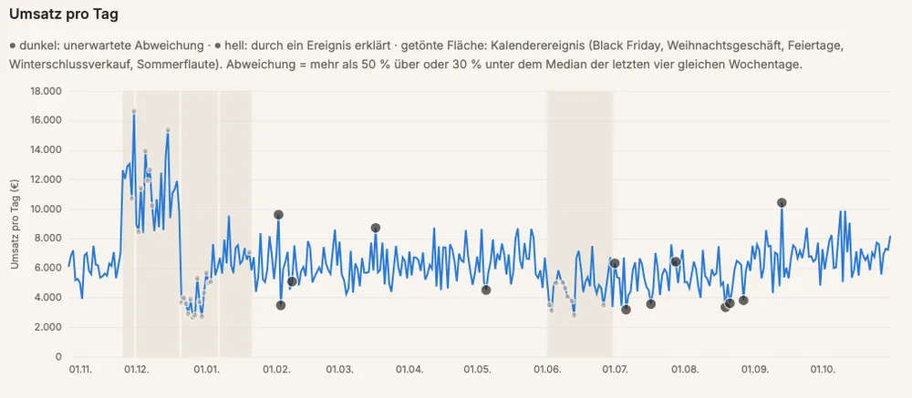
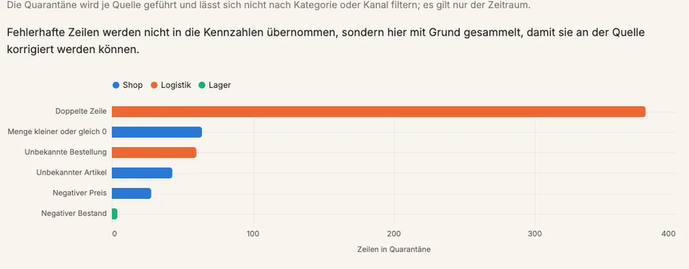

01
Diese Woche wichtig
Das Dashboard sagt, was heute zu tun ist.

Aus drei Quellsystemen werden täglich Zahlen, denen man vertraut.

Das Dashboard sagt, was heute zu tun ist.

Empfehlung mit Datum und Menge.

Black Friday gilt als erwartet, der Rest wird gemeldet.

Fehlerhafte Zeilen landen mit Grund zur Prüfung.
